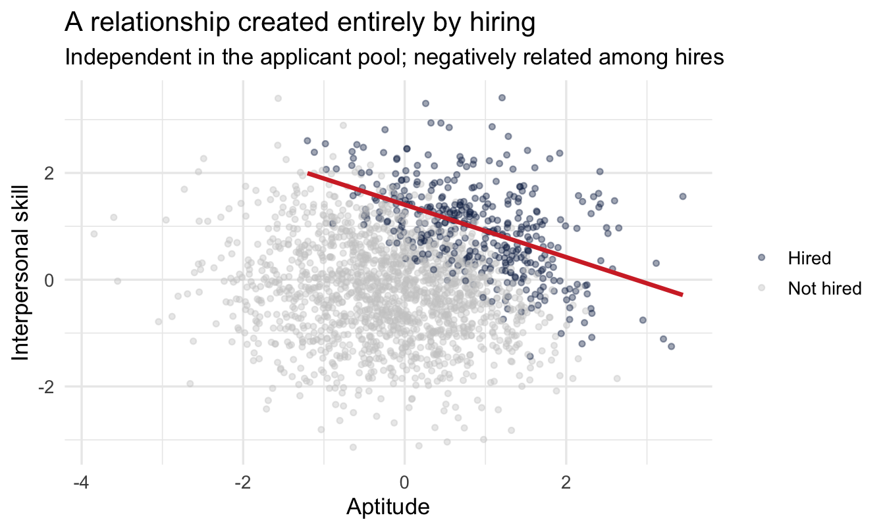
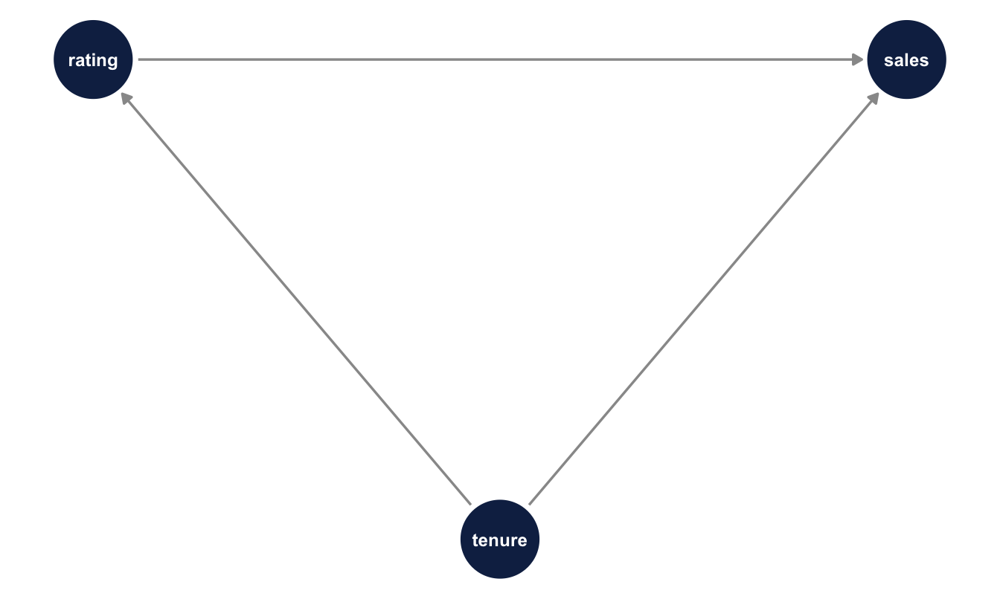
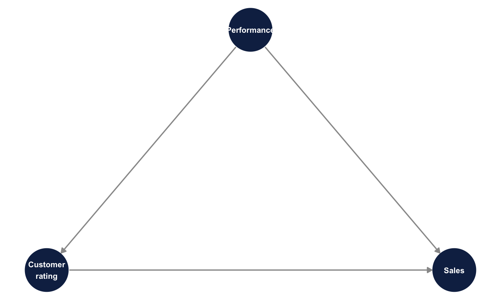
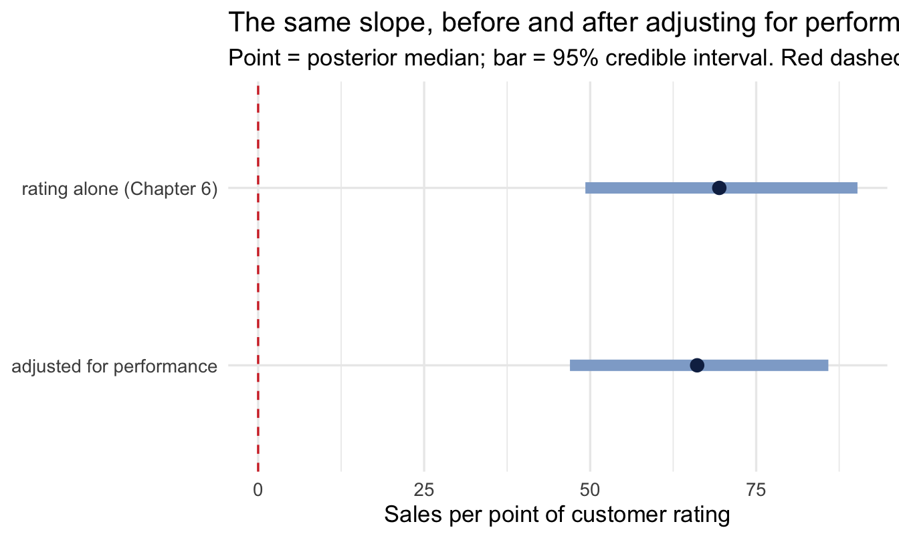
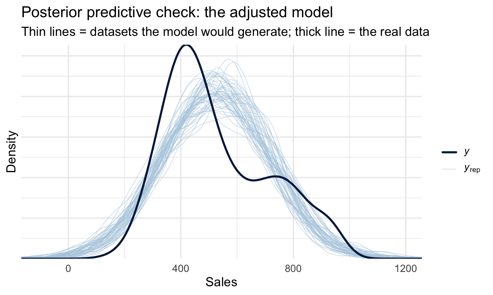

library(tidyverse)
library(peopleanalyticsdata)
library(brms)
library(tidybayes)
library(ggdag)
library(dagitty)
theme_set(theme_minimal(base_size = 13))
set.seed(2026)
# Shared colour tokens (matching theme/academicdesign*.scss). Navy and light
# navy carry the data; red is reserved for reference lines and annotations,
# never for a second data series.
navy <- "#122a52"
navy_light <- "#8fabd0"
red <- "#d32f2f"
data("salespeople", package = "peopleanalyticsdata")
# Chapter 1 found a single missing value in each of `sales`,
# `customer_rate` and `performance`; dropping those rows here keeps
# the rest of this chapter's code simple.
salespeople <- salespeople |> drop_na()21 Causal Structure: Drawing the Graph
Welcome
Back in Chapter 6 we fitted a model of sales on customer rating, read the slope, and then added a caveat that we didn’t do anything about:
One more caveat worth saying out loud, because a break-even calculation quietly assumes it: the slope describes an association between rating and sales among current salespeople. Treating it as what would happen if you intervened to raise ratings is a causal claim the data alone doesn’t support.
That was honest, and it was also a dead end. It told you what you couldn’t say without telling you what it would take to say it. This chapter is the missing half.
The good news is that it takes less machinery than you’d expect. You don’t need an experiment, and you don’t need a new modelling framework — the brm() skeleton is the same one you’ve been using since Chapter 5. What you need is a way to write down what you believe about how the world works, and a rule for reading off which variables belong in the model. That’s it. The hard part isn’t the statistics.
Important
The core idea in one sentence: which variables you control for is a question about causes, not about model fit — and no amount of data will answer it for you.
Analysis strategy
This chapter’s strategy is its subject, so it is shorter than usual and it looks different from the others: there is no new model to fit.
What we have. The same salespeople data and the same fitted model as Chapter 6. Nothing new arrives.
What would answer the question. Chapter 6’s slope with a defensible claim attached to it — specifically, whether it is the association among current salespeople or an estimate of what would happen if you raised somebody’s rating. Those are different quantities, and the printed output looks identical either way.
What could go wrong. Everything, and quietly. “Which variable should I adjust for” and “which variable improves the fit” are different questions, and no number the model prints distinguishes them. Adding the wrong control makes the estimate worse in a way nothing in the output flags, and more data makes it worse rather than better.
So the plan. Write down what we believe causes what, before touching the data. Derive from that diagram which variables must be in the model. Fit it. Then say what the posterior means given the diagram, and what it still assumes.
What would make us stop. Nothing in the output — which is the point, and the reason this section reads oddly. The thing that would stop us is somebody in the room saying the diagram is wrong, and that has to happen before the model is fitted rather than after.
What you’ll be able to do by the end
- Draw a DAG — a diagram of what you believe causes what — and read it as a set of falsifiable claims rather than a picture
- Recognise the three structures that generate every confounding problem you’ll meet: the fork, the chain and the collider
- Explain why “control for everything you have” is wrong, and name the two distinct ways it goes wrong
- Use
dagittyto derive the set of variables you must adjust for - Fit that adjusted model and state what the posterior means — and what it still assumes
- Recognise that every analysis of employee data is already conditioned on a collider, and say something sensible about it
21.1 Setup
Two new packages. ggdag draws causal diagrams and dagitty does the graph theory underneath — works out, from the diagram, which variables you need to adjust for. Neither fits models; they operate purely on your assumptions, before any data is touched. That separation is the whole point.
21.2 Why “control for everything” is wrong
Ask most analysts how to decide what goes in a model and you’ll get one of two answers. Either put in everything you’ve got and let the model sort it out, or put in whatever improves the fit statistics. Both are reasonable-sounding, and both are wrong in ways that matter.
The fit-statistics answer fails because Chapter 7’s LOO comparison answers a different question than the one being asked. LOO tells you which model predicts held-out data better. A model can predict beautifully and give you a completely wrong answer about what would happen if you intervened — those are different jobs, and nothing in the model output distinguishes them.
The everything-you’ve-got answer fails for a subtler reason: some variables make your estimate worse when you adjust for them. Not “add noise” worse. Systematically, confidently wrong worse. And they look exactly like the helpful ones from inside the regression output.
Three small simulations make this concrete. In each one we know the true answer because we generated the data, which is the only situation where you can actually check whether a method works.
21.3 The three structures
21.3.1 The fork: a common cause
The familiar one. Something causes both your predictor and your outcome, manufacturing an association between them that isn’t a causal path.
- 1
- Standardised, so every coefficient below is on the same scale and the numbers are directly comparable.
- 2
- Longer-tenured salespeople get better customer ratings.
- 3
-
Longer-tenured salespeople also sell more — and note what is not in this line.
ratingdoes not appear. The true causal effect of rating on sales is exactly zero.
bind_rows(
slope_of(lm(sales ~ rating, data = fork), "rating", "rating alone"),
slope_of(lm(sales ~ rating + tenure, data = fork), "rating", "rating + tenure")
)# A tibble: 2 × 3
model estimate se
<chr> <dbl> <dbl>
1 rating alone 0.285 0.0241
2 rating + tenure -0.0474 0.0228The first model reports a solid positive relationship between rating and sales. It is not a small effect, it is not marginal, and if you saw it in a real dataset you would believe it. It is also entirely an artefact of tenure. Adjusting for tenure returns the estimate to approximately zero, which is the truth.
This is the case everyone knows, and it’s the one that motivates the instinct to control for everything. So far so good.
21.3.2 The chain: a mediator
Now the same picture with the arrows rearranged.
- 1
- Good managers raise engagement.
- 2
-
Engaged people are less likely to leave. Again, note what’s absent:
manager_qualitydoesn’t appear here. Managers affect attrition only through engagement — every bit of their effect flows down this path.
bind_rows(
slope_of(lm(attrition_risk ~ manager_quality, data = chain),
"manager_quality", "manager_quality alone"),
slope_of(lm(attrition_risk ~ manager_quality + engagement, data = chain),
"manager_quality", "manager_quality + engagement")
)# A tibble: 2 × 3
model estimate se
<chr> <dbl> <dbl>
1 manager_quality alone -0.401 0.0263
2 manager_quality + engagement 0.0452 0.0277Here the first model is right and the second is wrong. Manager quality genuinely reduces attrition risk — that’s how we built the data — and the first model finds it. Adjusting for engagement makes managers look irrelevant, because we’ve held constant the very thing through which they act.
Important
Same regression output, opposite conclusion about which model to trust. Nothing inside the model tells you which situation you’re in. Tenure was a confounder to be adjusted for; engagement is a mediator to be left alone. They are statistically indistinguishable and causally opposite.
This one causes problems constantly in People Analytics, because the variables sitting in an HRIS are mostly downstream of the thing being studied. Engagement, performance rating, promotion, internal mobility — these are consequences at least as often as they are causes. Throwing them into a model as “controls” is not neutral.
21.3.3 The collider: a common effect
The third structure is the one almost nobody has an intuition for, and it’s the most important one in this field.
- 1
- In the applicant pool, aptitude and interpersonal skill are generated independently — knowing one tells you nothing about the other.
- 2
- The hiring process weighs both.
- 3
- The top 20% get offers.
tibble(
population = cor(collider$aptitude, collider$interpersonal),
among_hires = with(filter(collider, hired), cor(aptitude, interpersonal))
)# A tibble: 1 × 2
population among_hires
<dbl> <dbl>
1 0.00897 -0.489In the applicant pool the correlation is essentially zero. Among the people who were hired it is solidly negative — and nothing about anyone changed. We didn’t condition on aptitude or on interpersonal skill. We conditioned on being hired, which both of them cause.
The mechanism, once you see it, is obvious: to clear a bar that sums two things, a candidate who is weak on one must be strong on the other. The weak-on-both candidates were filtered out, and they were the ones holding the lower-left corner of the scatterplot.
Code
collider |>
mutate(status = if_else(hired, "Hired", "Not hired")) |>
ggplot(aes(aptitude, interpersonal, colour = status)) +
geom_point(alpha = 0.4, size = 1.2) +
geom_smooth(data = ~filter(.x, status == "Hired"),
method = "lm", se = FALSE, colour = red) +
scale_colour_manual(values = c("Hired" = navy, "Not hired" = "grey80")) +
labs(
title = "A relationship created entirely by hiring",
subtitle = "Independent in the applicant pool; negatively related among hires",
x = "Aptitude", y = "Interpersonal skill", colour = NULL
)
ImportantThe uncomfortable general case
You can only analyse people your organisation hired and who haven’t yet left. Both of those are caused by many of the variables you care about. Every dataset in this book, and every dataset on your laptop, is already conditioned on at least one collider.
That isn’t a reason to stop working. It is a reason to stop being surprised when a validated selection test shows no relationship with performance among your employees, or when two things that obviously ought to go together don’t. Range restriction, the “why does our assessment have zero validity” problem, and the four-stage selection story that distorts observed performance distributions are all this structure, described in different vocabularies.
21.4 A DAG is a set of claims
Now the notation. A DAG — directed acyclic graph — is those pictures, written down formally enough that software can reason about them.
sales_dag <- dagify(
sales ~ rating + tenure,
rating ~ tenure,
exposure = "rating",
outcome = "sales"
)
sales_dag |>
tidy_dagitty(seed = 2026) |>
ggplot(aes(x = x, y = y, xend = xend, yend = yend)) +
geom_dag_edges(edge_colour = "grey60") +
geom_dag_point(colour = navy, size = 18) +
geom_dag_text(colour = "white", size = 3.2) +
theme_dag()
Three rules for reading it, in order of how often they’re forgotten:
- An arrow is a claim that one thing causes another. Not “correlates with”, not “is associated with”. Causes.
- A missing arrow is a stronger claim than a present one. Drawing an arrow says “there might be an effect here.” Leaving one out says “there is no direct effect here, and I’m willing to be held to that.” Most of a DAG’s content is in what you didn’t draw.
- Acyclic means no loops. You cannot have A causing B causing A. Real organisations are full of feedback loops, and handling them properly means adding time — engagement in Q1 affecting performance in Q2 affecting engagement in Q3 — so the arrows always point forward.
NoteA different lens: two dialects of the same language
If you came to this from econometrics, DAGs may feel like an unfamiliar route to familiar destinations. The econometrics tradition typically works from a structural equation and an identification argument stated in prose — omitted variable bias, exogeneity, exclusion restrictions. The graphical tradition, associated with Judea Pearl, works from the picture and derives the same conclusions as graph theory.
These are dialects, not rival theories. Omitted variable bias is the fork. Bad control is the chain and the collider. Sample selection bias — Heckman’s problem — is conditioning on a collider. The graphical version buys you two things: a diagram a non-technical stakeholder can argue with, and software that finds the adjustment set for you rather than requiring you to reason it out by hand each time. If you already think fluently in the algebraic dialect, treat this chapter as translation rather than instruction.
TipFor the ML/DS crowd
Feature selection and adjustment-set selection are different operations with different objectives, and using one for the other is the single most common way a good predictive modeller produces a bad causal estimate.
Feature selection asks: which inputs improve held-out prediction? Adjustment-set selection asks: which inputs, if held constant, isolate the causal path I care about? A collider will often improve predictive accuracy — it carries information — while destroying your ability to interpret the coefficient of interest. Regularisation doesn’t help; shrinking a bad control toward zero shrinks the bias too, but doesn’t remove it. Neither does more data: bias from adjusting on a collider doesn’t shrink with n, it just gets measured more precisely.
The practical tell: if you cannot state, for each variable in your model, why it is there in causal terms, you have a prediction model and should not be reading its coefficients.
21.5 Letting the graph choose the model
The payoff of writing assumptions down formally is that the adjustment set becomes a computation instead of an argument.
adjustmentSets(sales_dag, exposure = "rating", outcome = "sales"){ tenure }Given that graph, adjusting for tenure is sufficient to identify the effect of rating on sales. Change the graph and the answer changes — which is the point. The graph is doing the arguing, out in the open, where a stakeholder can disagree with a specific arrow rather than with your model as a whole.
Now a graph for the actual data. We have sales, customer_rate and performance in salespeople, and no tenure variable. Suppose we believe that a salesperson’s underlying capability — captured imperfectly by their performance rating — drives both the ratings customers give them and the sales they make:
sp_dag <- dagify(
sales ~ customer_rate + performance,
customer_rate ~ performance,
exposure = "customer_rate",
outcome = "sales",
labels = c(
sales = "Sales",
customer_rate = "Customer\nrating",
performance = "Performance"
)
)
sp_dag |>
tidy_dagitty(seed = 2026) |>
ggplot(aes(x = x, y = y, xend = xend, yend = yend)) +
geom_dag_edges(edge_colour = "grey60") +
geom_dag_point(colour = navy, size = 20) +
geom_dag_text(aes(label = label), colour = "white", size = 2.8) +
theme_dag()
adjustmentSets(sp_dag, exposure = "customer_rate", outcome = "sales"){ performance }
Important
This graph is a hypothesis, and a contestable one. You could argue the arrow between performance and customer rating runs the other way, or that both are caused by something we haven’t measured. Those are real objections and the DAG doesn’t settle them — it states the position clearly enough to be objected to. That is a large improvement on the usual alternative, which is an unstated position embedded in a variable list.
21.5.1 Look at the arrows before you fit anything
A fork only distorts your estimate if both of its arrows are substantial. A common cause that barely moves the predictor, or barely moves the outcome, has little to bias away. Worth two lines before committing to a model:
salespeople |>
summarise(
`performance -> customer_rate` = cor(performance, customer_rate),
`performance -> sales` = cor(performance, sales)
) performance -> customer_rate performance -> sales
1 0.05886397 0.2796597Keep those two numbers in mind — they predict how much the adjustment below can possibly change.
21.5.2 Fitting it
Same skeleton as every model since Chapter 5, one extra term. We fit both versions here so the difference is visible in one place rather than requiring you to flip back:
salespeople <- salespeople |>
1 mutate(customer_rate_c = customer_rate - mean(customer_rate))
priors <- c(
2 prior(normal(400, 200), class = Intercept),
prior(normal(0, 100), class = b),
prior(exponential(0.005), class = sigma)
)
fit_unadjusted <- brm(
sales ~ customer_rate_c,
data = salespeople, family = gaussian(),
prior = priors,
chains = 4, iter = 2000, seed = 20, refresh = 0
)
fit_adjusted <- brm(
3 sales ~ customer_rate_c + performance,
data = salespeople, family = gaussian(),
prior = priors,
chains = 4, iter = 2000, seed = 20, refresh = 0
)- 1
- Centred exactly as in Chapter 6, so the intercept stays interpretable.
- 2
- The same priors as Chapter 6, deliberately. The only thing that differs between these two models is the variable list, which is the whole argument of the chapter.
- 3
-
performanceis a 1–4 rating and we’re treating it as continuous here, which is a simplification — Chapter 18 does it properly. It doesn’t change the point being made.
Steps 5, 7 and 8 of the workflow are deliberately quiet here, and that is worth stating rather than leaving as a gap. The priors are Chapter 6’s, unchanged and already visualised there — the annotation above says so, because the whole argument depends on the two models differing in nothing but their variable list. Diagnostics and the posterior predictive check apply exactly as they did in Chapter 6, and for the same reason: this is the same Gaussian model with one extra term.
What this chapter adds is a step the earlier chapters could not reach. Step 2 — deciding what you are claiming — is the subject of everything above, and step 10 follows immediately below.
adjustment_comparison <- bind_rows(
fit_unadjusted |> spread_draws(b_customer_rate_c) |>
median_qi(.width = 0.95) |> mutate(model = "rating alone (Chapter 6)"),
fit_adjusted |> spread_draws(b_customer_rate_c) |>
median_qi(.width = 0.95) |> mutate(model = "adjusted for performance")
) |>
mutate(model = factor(model, levels = c("rating alone (Chapter 6)",
"adjusted for performance")))
adjustment_comparison |>
select(model, estimate = b_customer_rate_c, .lower, .upper)# A tibble: 2 × 4
model estimate .lower .upper
<fct> <dbl> <dbl> <dbl>
1 rating alone (Chapter 6) 69.4 49.3 90.3
2 adjusted for performance 66.1 47.0 85.9Code
ggplot(adjustment_comparison, aes(x = b_customer_rate_c, y = fct_rev(model))) +
geom_vline(xintercept = 0, linetype = "dashed", colour = red) +
geom_linerange(aes(xmin = .lower, xmax = .upper),
colour = navy_light, linewidth = 3) +
geom_point(colour = navy, size = 3) +
labs(
title = "The same slope, before and after adjusting for performance",
subtitle = "Point = posterior median; bar = 95% credible interval. Red dashed = no effect.",
x = "Sales per point of customer rating", y = NULL
)
21.5.3 Both models fit, and that is exactly the problem
Chapter 10’s step 8 asks whether the model reproduces the data. Run it on both:
Code
pp_check(fit_adjusted, ndraws = 50) +
labs(
title = "Posterior predictive check: the adjusted model",
subtitle = "Thin lines = datasets the model would generate; thick line = the real data",
x = "Sales", y = "Density"
)
Swap fit_adjusted for fit_unadjusted and run it again. The chart is essentially identical — which is the entire point of this section.
ImportantThe most important negative result in the chapter
The posterior predictive check passes. It also passed for the unadjusted model. It would have passed for a model adjusted for a collider too — adjusting for one of the simulations at the top of this chapter would likely have improved the fit while making the causal estimate systematically wrong.
That is worth sitting with, because it contradicts an instinct the previous ten chapters have carefully built. Everything up to Chapter 20 has treated “does the model fit the data?” as the question that decides whether to trust a result. Here it decides nothing. Both specifications describe the data they were given perfectly adequately, and one of them answers the question that was asked.
So the check still belongs in the workflow — it catches a badly specified likelihood, and that failure is real. It just cannot be asked to do a job it has no access to. No diagnostic computed from your data can tell you whether your adjustment set is right, because the data doesn’t contain that information. The DAG does, and the DAG came from a conversation.
21.5.4 When the number doesn’t move
If you were expecting the adjustment to overturn Chapter 6’s answer, it didn’t. The two estimates are close and their intervals overlap almost entirely — which the correlations above should have led you to expect, and which the chart makes obvious in a way the two rows of numbers don’t.
That overlap is the finding, and it is worth being precise about how to show it. Two intervals sitting on top of each other is a picture anyone can read; two pairs of decimal numbers invites a stakeholder to seize on the difference between them, which here is noise. Plot the comparison and the right conclusion is the one that’s easiest to reach.
That is a genuinely useful outcome, and it is worth being careful about what it does and doesn’t mean.
Important“So the adjustment was pointless?”
No — and this is the most important paragraph in the chapter.
Before the adjustment, we had a number nobody could interpret. Chapter 6 said so explicitly and left it there: the slope described an association, and whether it was also an intervention effect was unknown and unknowable from the model alone.
After the adjustment, we have a number that means something specific: given this graph, it is the effect of raising a salesperson’s customer rating while holding their performance fixed. The number is similar. The claim is completely different, and only one of the two versions can be put in front of someone about to spend money.
You could not have known in advance that it wouldn’t move. That’s the point of doing it. An analysis that changes the estimate and an analysis that confirms it are the same analysis — you just don’t get to skip it on the grounds that you expect the second outcome.
WarningAdjusting for a proxy is not the same as adjusting for the thing
One limitation belongs right here rather than in a footnote, because it applies to almost every adjustment you will ever make in People Analytics.
The DAG says the confounder is underlying performance. What we actually put in the model is the performance rating — a number a manager wrote down, once, on a scale of four. Chapter 19 puts the reliability of a rating like that at around 0.5, which is to say roughly half of what it varies by is the thing and roughly half is noise.
Adjusting for a noisy measure of a confounder only removes part of the confounding. The leftover is called residual confounding, and it biases the adjusted estimate in the same direction the unadjusted one was biased — just less far. So the honest description of the number above is not “the confounding is handled”. It is “the confounding is reduced, by an amount that depends on how good the rating is, and some of it is still in there.”
This is not an argument against adjusting; a partly-cleaned estimate is better than an uncleaned one, and it is far better than a number nobody can interpret. It is an argument for two habits:
- Say it. One sentence — “this adjusts for performance as measured by the annual rating, which is an imperfect proxy, so some confounding will remain” — is the difference between a defensible claim and an overclaim.
- Improve the measure where it matters. If the decision is expensive, a more reliable measure of the confounder does more for the estimate than a more sophisticated model does. Chapter 19’s
me()is the modelling route when you can put a number on the measurement error; better measurement is the real route.
A DAG tells you which variables to adjust for. It has nothing to say about whether the columns in your file are actually those variables, and in HR data they routinely aren’t.
NoteWhat to say when it does move
It often will. When it does, the temptation is to present the adjusted model as the better one, and that framing invites an argument you don’t want to have.
Both models are correct answers to different questions. The unadjusted number answers among our current salespeople, how much more do the highly-rated ones sell? — the right number for a forecast, or for deciding who to talk to. The adjusted number answers if we raised one person’s rating while their underlying performance stayed the same, how much more would they sell? — the right number for deciding whether to fund a customer-experience programme.
Say which question you answered. That sentence prevents more misinterpretation than any diagnostic in this book.
NoteThe formula from Chapter 18, now with a diagram behind it
Chapter 18 offered a one-line habit for the step between analysis and recommendation:
The model says X. Recommending Y additionally assumes Z.
At that point Z had to be improvised — a list of worries, assembled from whatever came to mind. That is the part this chapter fixes. The DAG is Z: every arrow you drew is an assumption you are making, every arrow you declined to draw is an assumption you are making more strongly, and adjustmentSets() turns the whole thing into a specific claim about which variables had to be in the model.
So the sentence gets shorter and much harder to argue with:
The model says raising a salesperson’s customer rating by one point is associated with this much more in sales, adjusting for performance. Recommending a customer-experience programme additionally assumes the graph on this page — in particular, that performance is the only common cause of rating and sales, and that the rating we adjusted for measures it well enough.
Attach the diagram to the recommendation. It is one picture, stakeholders can read it, and it moves the argument from “do you trust the analyst” to “is this arrow right” — which is a question the room is qualified to answer and you are not.
21.6 What this still assumes
The posterior above is a causal effect conditional on the graph being right. It carries every assumption in the diagram, including all the arrows we didn’t draw. That’s not a weakness of the method; it’s the method being explicit about something every regression assumes silently.
The assumption most likely to fail is that there is no unmeasured common cause. In People Analytics there usually is one — motivation, manager support, the state of the territory — and it is usually unmeasured precisely because it’s hard to measure.
Two honest responses, neither of which is “add more controls”:
Say what would have to be true. Rather than claiming no confounding, state how strong an unmeasured confounder would need to be to overturn your conclusion. If the answer is “it would need to be more strongly related to sales than performance is,” most stakeholders can judge that for themselves. Searching for sensitivity analysis for unmeasured confounding, E-values and tipping-point analysis will find the formal versions.
Put a prior on it. This is where the Bayesian framing earns its keep: an unmeasured confounder can be included in the model as a parameter with an informative prior representing your beliefs about its strength, and the posterior for your effect then integrates over that uncertainty instead of ignoring it. Chapter 23’s elicitation protocol is the natural way to get that prior, and Chapter 14’s prior_strength discussion is the same conversation about how much a belief should count.
21.7 The graph as an elicitation artefact
Worth pausing on, because it’s the reason this chapter sits where it does. A DAG is not really a statistical object. It’s a record of what a group of people believe about how their organisation works — and drawing one with your stakeholders does something that no amount of modelling does afterwards.
It surfaces disagreement early. Two HRBPs who both nod along to “engagement drives retention” will draw different arrows when asked whether manager quality acts through engagement or alongside it, and that disagreement is worth more than a fit statistic. It also makes the control-variable decision a business conversation rather than a technical one, which is exactly where it belongs — it is a question about causes, and they know more about the causes than you do.
This is the same move as Chapter 23’s prior elicitation, applied to structure rather than to magnitude. Same workshop, same people, often the same hour. One produces the priors; the other produces the model specification.
CautionTry it yourself
- Redraw
sp_dagwith the arrow betweenperformanceandcustomer_ratereversed, so customer ratings feed the performance rating rather than the other way round. RerunadjustmentSets(). What changes, and what does that imply about the model you should fit? - Add an unmeasured node
capabilitythat causes all three observed variables (latent = "capability"indagify()). Does an adjustment set still exist? - Take the collider simulation and vary the selection rate from 0.8 down to 0.2. How does the induced correlation among hires change as the process gets more selective?
On the job
ImportantWhy this matters day to day
Most of the questions People Analytics gets asked are causal, and almost none of them are phrased that way. Does our manager training work? Is flexible working hurting promotion? Would raising pay reduce attrition? Each one is an intervention question dressed as a data question.
The value of this chapter isn’t that it lets you answer them definitively — often the honest answer is that the data can’t. It’s that it lets you say precisely what you’d need in order to answer, which is a far better deliverable than a regression coefficient with a caveat attached. “We can estimate this if we can measure territory quality; without it, the estimate is biased upward by an unknown amount” is a sentence that gets budget for measuring territory quality.
It also gives you a principled defence for a variable list, which you will need the first time someone senior asks why you didn’t control for performance rating.
Summary
NoteToday you learned
- Which variables to control for is a causal question. Fit statistics can’t answer it, and neither can more data.
- A fork (common cause) creates bias you fix by adjusting.
- A chain (mediator) creates bias you fix by not adjusting — controlling for a mediator hides the effect you’re looking for.
- A collider (common effect) creates bias when you adjust for it, including when the adjustment is invisible because it happened in the selection of your sample.
- Every employee dataset is conditioned on at least one collider, because you only observe people who were hired and haven’t left.
- A DAG makes those assumptions explicit and contestable, and
dagitty::adjustmentSets()turns them into a variable list. - The resulting posterior is a causal effect given the graph — state the graph, and state what would have to be true for it to be wrong.
Next chapter
Causal designs: finding variation you didn’t create — the DAG tells you what you’d need to adjust for. Sometimes you can’t, because the confounder is unmeasured or unmeasurable. The next chapter covers what to do instead: difference-in-differences, event studies and the family of designs that exploit variation the organisation generated for its own reasons — policy changes, staggered rollouts, thresholds — rather than variation you had to assume away.